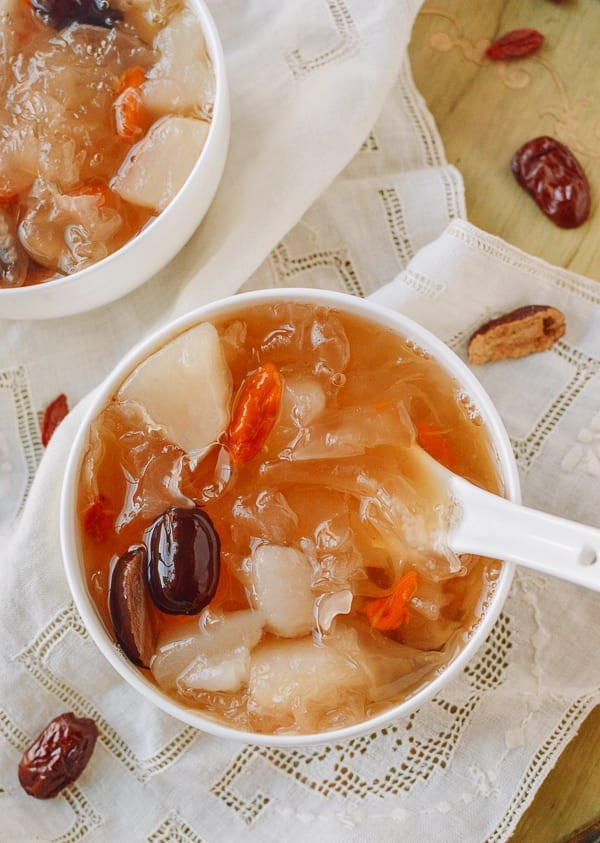

Snow fungus soup is a Chinese delicacy incorporating snow fungus, an edible fungus that grows on trees and has been used since ancient times as a remedy. It is believed that snow fungus can nourish the lungs, and it is especially beneficial for women.
Meal prep time : 11 hours
Servings : 8